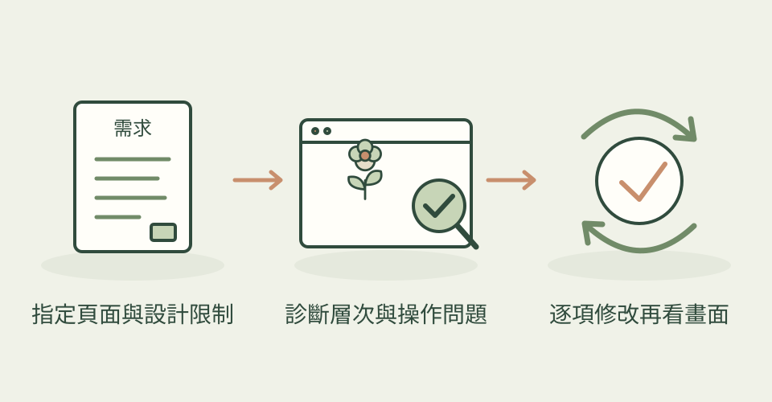
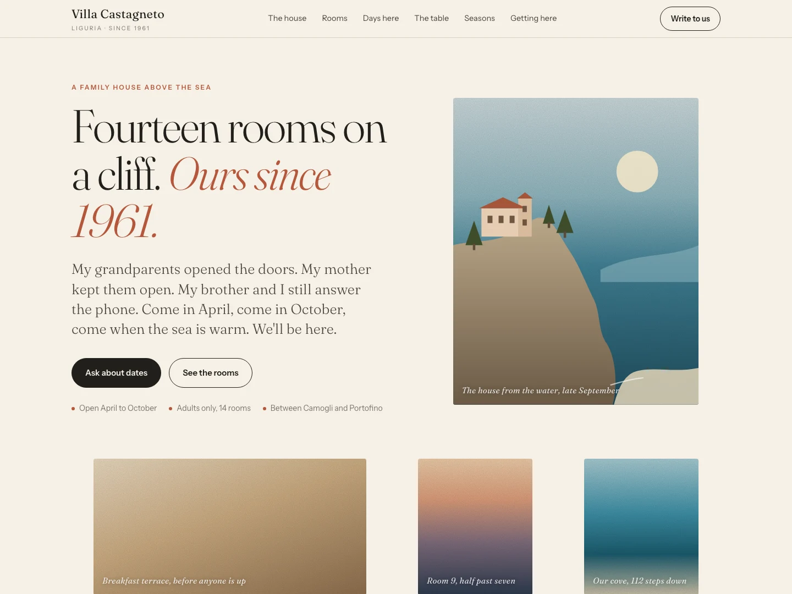

你可能看過這種網頁：每區都排三張相同卡片、每個標題上方都有圓角小圖示，再加一片紫藍漸層。單看元素不一定有錯，整頁卻很難看出品牌個性。Impeccable 把「幫我改好看」拆成可指定的工作，讓 AI 先理解產品與既有設計，再挑一段介面仔細修改。
它怎麼幫忙
先用 init 記下產品對象與限制，用 document 整理既有視覺規則。critique 評估層次、閱讀與操作，audit 檢查無障礙、效能及不同尺寸；接著可用 typeset 調字級、layout 理間距、distill 刪掉多餘元素，最後 polish 收尾。bolder 和 quieter 分別讓畫面更鮮明或更收斂。
另有 62 條確定性規則檢查常見模板模式與品質問題；它找的是具體設計特徵，不能證明頁面是否由 AI 製作，也不等於客觀美感評分。
三步驟看懂這個技能

先指定一段既有介面，依產品需求診斷，再打磨並查看實際畫面；本站功能示意，非作者成果或技能實測。
功能示意・本站繪製 放大查看可以這樣開口
這是一個可依需求修改的委託範例。
用 Impeccable 檢視我的陶藝工作室作品集。先 critique 首屏和作品列表，列出最影響閱讀與辨識度的三個問題；保留現有品牌綠色、真實作品照片、文案與功能。優先調整字體層次、留白和作品分組，刪掉沒有用途的裝飾。修改後以桌機和手機檢查圖片、按鈕與文字換行，再做 polish。
適合什麼工作
適合已有網站、作品集、產品頁或後台，想知道哪裡有模板感、又不想盲目整頁翻修的設計師與開發者。一次指定首屏、價目卡或表單，通常比籠統要求整站變高級更容易核對。也能做新頁，但仍需要明確內容、品牌方向與人工判斷。
開始之前
- 準備工具
- 需要能讀寫專案、執行工具及查看畫面的 AI 程式助手，以及原專案的開發環境。支援 Codex、Claude Code、Cursor 等工具；npx 安裝路線需要 Node，技能執行器是隨附或首次下載的獨立程式。檢查渲染頁面需要 Chrome／Edge；live 模式針對本機開發伺服器，不是直接修改公開網站。
- 使用成本
- 專案採 Apache-2.0。規則偵測器不需要模型或 API key；讓 AI 分析及修改程式仍會消耗所用助手的額度。直接寫前端程式的路線沒有必需的付費生圖服務；若另外選擇先生成視覺稿、照片或其他素材，才依對應工具的額度與授權計算。
- 交付內容
- 優先排序的介面問題報告、修改後的前端原始碼、產品與設計脈絡文件，以及依工作流程產生的預覽或檢查資料；不是只有一張不能操作的網頁圖片。
- 先留意
- 2026-11-11 首次收錄，並非今日發布；本次核實的 Codex SKILL 標示 4.8.2，星數屬整個儲存庫。兩張旅館圖是作者用同一模型 Fable 5.1 與同一需求分別建立的示例，並非同一份原始碼改版前後，也不保證你的成果同樣改善。本站沒有執行技能驗證設計效果。若使用 live 的 Apply，README 說明無活躍聊天代理時可能改呼叫關閉批准及沙箱檢查的本機 CLI；可用 IMPECCABLE_LIVE_COPY_AGENT=chat 留在聊天代理，或 off 停用 Apply。
最近的觀察
2026-11-12：預設分支新增把設計規則與評析歷史同步到 Impeccable 帳戶的流程，適合想跨專案查看介面診斷紀錄的人。例如保存作品集的 critique 報告，之後在帳戶回看。這次主要是帳戶與資料同步，沒有新增插畫或排版能力；Codex SKILL 仍標示 4.8.2，不能把主分支變化說成已發布新版。依目前 CLI 合約，登入且權限包含 design:write／critiques:write 時，DESIGN.md 內容與已儲存 critique 報告預設可上傳；舊登入缺少權限時會跳過，並可能提示重新登入。可用 health design off、critiques off 分別關閉，health off 關閉設計健康同步；setup status/on/off/forget 管理每日安裝狀態摘要回報。未登入、CI 或遙測退出時不傳送，明確關閉優先。這不代表所有使用者都已開啟，也不是新增必要付費生圖服務；助手額度仍另計。本站只讀原始碼與合約，未執行新 CLI、登入或更動本機設定。
對照：相同需求，未使用 Impeccable

作者與來源
本文依作者公開說明整理，沒有實際執行這個專案。功能插圖由本站繪製，原作者範例另行標示；並非本站執行技能的測試結果。GitHub 星數為專案總量，觀察時間為 2026年11月12日 08:29（台北時間）。
與前次快照相比增加 619 星；這不是 GitHub Trending 排名。